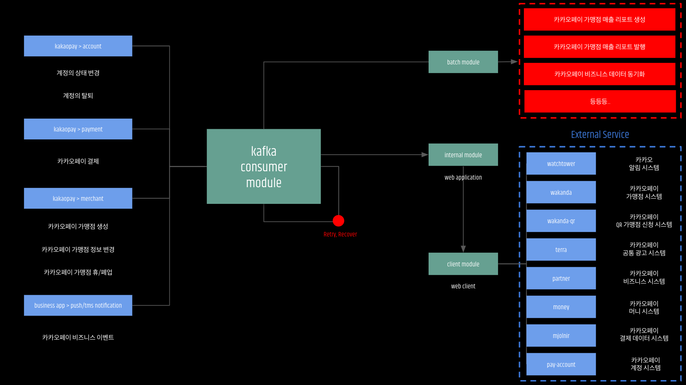

페이 비즈니스 앱이란?
카카오페이 가맹점을 타겟으로 하여 금융 서비스, 결제내역, 매출 분석 리포트, 직원 관리, 가맹점 관리 등의 서비스를 제공 하는 모바일 어플리케이션 서비스 입니다.
(이하 비즈니스 앱이라 칭함)
👏👏👏 (짝짝짝)
제공해주는 기능을 크게 보면 아래와 같습니다.
매장홈 (모아보기)
접근 권한 체크부터 시작해서 매장 정보, 소속된 매장 리스트, 오늘 결제 내역, 최근 결제 내역, 광고 배너, 공지사항, 앱 업데이트 정보 등의 다양한 정보들을 한 화면에 표시해줍니다.직원
하나의 카카오페이 가맹점에 소속된 직원의 정보와 권한, 메모를 관리합니다.파트너
카카오페이 가맹점의 데이터를 관리합니다.유저
카카오페이 유저를 의미하며 카카오페이 계정을 상속받지만, 결국 비즈니스 앱 내부에서 별도로 계정 체계를 관리합니다.(대형 프랜차이즈 가맹점의 관리자인 경우도 마찬가지)
결제
카카오페이 가맹점에서 일어나는 모든 결제 채널 (소호, 오프라인, 온라인, 알리페이) 의 결제 기록 및 합산 데이터를 노출해주는 기능입니다.리포트 📈
카카오페이 가맹점에서 일어나는 결제뿐만 아니라 카카오톡 사용자 데이터 그리고 신용카드, 기업 계좌/신용 등을 연동 및 활용하여 다양한 매출 리포트를 제공해주는 기능입니다. (매출이 얼마인가, 작년에 비해 매출이 어느정도 늘었나, 어떤 연령대/ 성별에게 인기가 많은가 등..)작업 환경
비즈니스 앱의 작업 환경은 다음과 같습니다.- java (rxjava)
- spring boot / reactor (webflux)
- mysql (jpa)
- kafka (spring-kafka)
- spring-cloud-gateway
- redis (reactive-data-redis)
- spring-batch
또한 프로젝트는 아래와 같은 멀티모듈 형태로 구성되어 있으며 각 모듈에서는 필요에 따라 다른 모듈을 상속받아 사용하는 방식 으로 운영됩니다.
또한 기본적으로 webflux 방식으로 구현 되어 있습니다.
카카오페이에 webflux 방식으로 구현된 프로젝트가 많지않았기 때문에 많은 고민을 하였지만,
(실제로 만들다가 중간에 포기하고 mvc 로 돌아가려고 rollback 2번 했습니다... 😂)
spring reactor 와 rxjava 를 공부하면서 '비즈니스 앱이야 말로 webflux 의 장점을 많이 활용할 수 있는 서비스일 것이다' 라고 판단 하여 다시 돌아왔습니다.
제가 생각한 webflux 활용 장점이자 비즈니스 앱 서비스가 이를 채택한 이유 는 다음과 같습니다.
(실전! 스프링 5를 활용한 리액티브 프로그래밍 참고)첫번째, 마이크로서비스 기반 시스템
결제, 쿠폰, 마일리지, 파트너, 계정 등 비즈니스 백엔드 서버에서 연계하는 다양한 시스템이 전부 MSA 로 구성되어 있고 이를 통신하며 많은 I/O 가 발생하며, 이렇게 다양한 외부 서비스 간 호출이 중요한 시스템의 경우에는 최고의 선택 이라고 판단했습니다.두번째, 접속이 느린 클라이언트를 처리하는 시스템
모바일 어플리케이션 서비스이다 보니 접속이 느리거나 불안정한 네트워크의 경우가 종종 발생합니다.이런 경우 webflux 는 thread 를 blocking 하지 않고 연결을 허용하기 때문에 느린 연결로 인한 문제가 발생하지 않고 들어오는 요청 본문을 기다리는 동안 차단하지 않고 계속해서 다른 연결을 수신해줍니다.
결국 이러한 부분 때문에 접속이 느리거나 불안정한 네트워크가 되는 상태가 왕왕 발생하는 모바일 어플리케이션의 경우에도 최고의 선택이라고 판단 했습니다.
세번째, 낮은 대기시간과 높은 처리량
리액티브와 논블로킹을 사용할 때의 중요한 이점은 적고 고정된 수의 쓰레드와 보다 적은 메모리를 사용하도록 조정할 수 있는 능력에 있습니다. 이는 어플리케이션이 부하에 대해 더 탄력적으로 동작할 수 있도록 합니다. 왜냐하면 보다 예측할 수 있는 방법으로 조정되기 때문입니다.네번째, 다양한 리액티브 라이브러리
webflux 활용의 장점을 더 극대화하기 위하여 다양한 라이브러리를 사용 할 수 있었습니다.물론 아쉬웠던 점 도 있었습니다.
첫번째, Mysql 미지원
Webflux 사용을 결정한 순간부터 가장 고민했던게 데이터베이스를 무엇을 쓸까? 라는 고민이였습니다.카카오페이는 꽤 다양한 데이터베이스를 쓰고 있지만, 주력으로 쓰는건 Mysql 이였고 제가 주로 사용해본 DBMS 또한 Mysql 이였습니다.
Reactive 를 지원해주는 MongoDB 를 써볼까도 고민했었지만,
전사적으로 MongoDB 를 Deprecated 시키려는 작업을 진행하고 있었기 때문에 뒤늦게 MongoDB 를 사용해서 관리포인트를 추가하는건 미련하다고 판단했습니다.
그렇다고 (아직은 불안정한) R2DBC 를 쓰는것도 좋은 결정은 아닌것 같다고 생각했습니다.
결국 고민해서 내린 결정은 Mysql 을 쓰되 Reactive 를 지원해주는 Redis Cache 를 열심히 쓰자! 에 도달하여 바로 도입하게 되었습니다.
Reactive 를 지원하지 않는 DB 를 메인 저장소로 쓰려고 하니 병목에 대한 두려움이 생겼고, 이를 위한 '내부 게이트웨이 모듈' 에 역할을 늘려 이러한 단점을 조금이나마 개선해보고자 하였습니다.
우선 들어오는 요청에 대해서 구분을 두어 get 요청이 아닌 post, put, delete 요청에 대해서는 request rate limiter (w, redis) 를 두어 replenish_rate 를 2,000, burst_capacity 를 4,000 으로 제한하여 요청할 수 있는 사용자, 요청 수를 제한하였습니다.
(이 설정은 올바르지 않다고 생각합니다. 모든 사용자의 요청을 전부 처리해주어야 좋은 소프트웨어라고 생각하지만, 제가 아직 많이 부족합니다 ㅎ)
@Bean
public RouteLocator routes(RouteLocatorBuilder builder) {
return builder.routes()
.route(r -> r
.method(HttpMethod.GET)
.and()
.path("/**")
.uri(internalUri))
* 삽입, 삭제, 수정시에만 조절
.route(r -> r
.method(HttpMethod.POST)
.or()
.method(HttpMethod.PUT)
.or()
.method(HttpMethod.DELETE)
.and()
.path("/**")
.filters(f -> f.requestRateLimiter(c -> {
c.setKeyResolver(ipKeyResolver);
c.setRateLimiter(redisRateLimiter);
}))
.uri(internalUri))
.build();
}
뿐만 아니라 '내부 게이트웨이 모듈' 에서는 아래와 같은 역할도 합니다.
공통 pay-auth interface 를 받아서 deserialize 한 뒤에 내부 데이터를 통한 사용자 데이터 검증 기능
로깅, 어플리케이션 강제 업데이트 체크
서비스 공통 타임아웃 및 배압 설정
@Bean
public GlobalFilter accountMappingFilter() {
final String event = "GlobalFilterConfig#accountMappingFilter";
return (exchange, chain) -> {
HttpHeaders httpHeaders = exchange.getRequest().getHeaders();
* 헬스체크
if (isHealthCheck(exchange.getRequest())) {
return exchange.getResponse()
.writeAndFlushWith(Flux.just(HEALTH_CHECK_RETURN_KEYWORD)
.delayElements(delayDuration)
.map(body -> Mono.just(exchange.getResponse()
.bufferFactory()
.allocateBuffer()
.write(body.getBytes()))));
}
* 어플리케이션 강제 업데이트 (IOS, AOS)
if (isForceAppUpdate(exchange.getRequest())) {
return Mono.error(new LowApplicationVersionException(UpdateType.FORCE.getDescription()));
}
log.info("[{}] request_header: {}", event, httpHeaders);
return Flux.just(Objects.requireNonNull(httpHeaders.getFirst(PAY_API_GATEWAY_HEADER_KEY)))
.switchIfEmpty(Mono.error(new InvalidAuthenticationException("사용자 정보를 찾을 수 없습니다.")))
.handle((account, synchronousSink) -> {
try {
if (StringUtils.isEmpty(account) || isNotRequiredAuthenticationRequest(exchange.getRequest())) {
synchronousSink.complete();
} else {
synchronousSink.next(getPayAccountId(account));
}
} catch (IOException ex) {
synchronousSink.error(ex);
}
})
* 서비스 유저 검증
.flatMap(this::findUserByPayAccountId)
.cast(Long.class)
.map(userId -> {
ServerHttpRequest serverHttpRequest = exchange.getRequest()
.mutate()
.header(PORTAL_GATEWAY_HEADER_KEY, userId.toString())
.build();
return exchange.mutate().request(serverHttpRequest).build();
})
.timeout(timeoutDuration)
* 배압 처리
// .delaySequence(delayDuration)
// .limitRate(limitRateRequestCount)
.onBackpressureBuffer()
.onErrorResume(ex -> {
final String message = String.format("[%s] message: %s, path: %s, %s: %s",
event, ex.getMessage(), exchange.getRequest().getURI().getPath(),
PAY_API_GATEWAY_HEADER_KEY, httpHeaders.getFirst(PAY_API_GATEWAY_HEADER_KEY));
log.error("{}", message, ex);
String errorMessage = errorMessage(ex.getMessage());
if (ex instanceof InvalidAuthenticationException) {
return Mono.error(new InvalidAuthenticationException(errorMessage));
}
return Mono.error(new InvalidArgumentsException(errorMessage));
})
.then(chain.filter(exchange));
};
}
두번째, 카카오 리액티브 환경 모니터링 미지원
카카오는 NEO 라는 APM 을 제공하여 전사적으로 잘 사용하고 있습니다.저 또한 이전 프로젝트에서 적용해서 아주 잘 사용했던 경험이 있었기 때문에 이번 프로젝트에서도 적용을 해보려고 했지만, 아쉽게도 아직은 Webflux 환경 어플리케이션은 지원해주지 않기 때문에 이번에는 사용하지 못하여 많은 아쉬움이 남았습니다.

(저희꺼 아니에요 🙅♂️)
데이터 관리 구조
비즈니스 앱은 안타깝지만 rdb mysql 을 기본 데이터 저장소로 이용하고 있습니다.
data-rdb module 의 기본 데이터 단위는 entity 입니다.
모듈 간 데이터 전달/처리 모듈 구조를 통일시키기 위해 실질적인 데이터 모델은 entity 와 1:n 구조를 가지는 data model 입니다.
data-rdb module 의 모든 함수의 response 는 data model 형태를 가지고 있습니다.
(저장의 경우에도 data model 을 파라미터로 넘겨주면 rdb-data module 의 함수 내에서 entity 로 맵핑하여 사용)
즉, 모든 모듈은 전달/처리용도로 data model 을 데이터 단위로 사용합니다. 모듈간 주고받는 데이터는 모두 data model 의 형태를 띄우고 있습니다.
api response 또한 data model 을 사용하며 resource dto 를 매번 생성/ 수정하여 사용합니다.
(외부에 요청/ 사용하는 스펙이 매번 변경되기 때문에) 다양하게 그리고 빠르게 변경되는 요구사항에 맞춰 사용합니다.
위와 같은 구조이기 때문에 캐싱 또한 data model 단위로 캐싱 됩니다.
리액티브 환경이기 때문에 mysql 을 지원하지 않는 현재 상황을 대응하기 위함이며 (schduler 별도로 잡아서 관리) 모든 데이터는 캐싱된 data model 을 가져와서 사용하는 방식 입니다.
1차 저장소: redis, 2차 저장소: relational database (mysql)
(redis fallback 시 rdb)캐시 저장소를 하나의 redis 로만 관리하다보니 데이터 갱신 (최신화) 은 2가지 방법으로 갱신 해주었습니다.
첫번째, 데이터 삽입, 수정, 삭제 이후 이벤트 발행
(발행된 이벤트를 수신한 객체가 redis 캐시 초기화)두번째, hibernate envers 와 spring scheduler 를 활용하여 변경점이 발생한 데이터에 대해서 10분마다 체크하여 이벤트를 발행
(발행된 이벤트를 수신한 객체가 redis 캐시 초기화)*hibernate envers: entity 의 변경점 (삽입, 삭제, 수정) 이 발생했을 때 히스토리를 남겨주는 hibernate 프로젝트 중 하나
외부 시스템과의 연동 및 배치 & 스케줄러

프로젝트 진행 중 발생했던 이슈
(해결못한거 많다..)프로젝트를 진행하며 적지 않은 이슈가 등록되고 해결하는 과정이 있었는데요. 이러한 과정에서 제가 했던 삽질, 시행착오에 대한 내용을 정리해두고자 합니다.
아래 정리해둔 이슈 외에도 꽤 많이 있지만, 중요하다고 생각되는 이슈들만 정리해두겠습니다.
· no healthy upstream 에러를 뱉으며 서버가 간헐적으로 죽는 이슈
@todo. 원인/해결방법/팁· fallback 처리를 위해 사용중인 hystrix, resilience 설정을 하나로 통합 하기
@todo. 원인/해결방법/팁· logback -> reactor logback 사용 검토해보기
@todo. 원인/해결방법/팁· rdb 병목이 예상되어 포털 GW 에서 요청 메서드를 구분해서 배압조절 처리 필요
@todo. 원인/해결방법/팁· 포털 gateway 에서 health check 요청받을 경우 500 에러 떨어지는 이슈
@todo. 원인/해결방법/팁· @HystrixCommand, stream 안에서 에러 발생할 경우 fallback method 처리되지 않는 이슈
@todo. 원인/해결방법/팁· Jackson-ObjectMapper Non-Blocking 하게 돌리기
@todo. 원인/해결방법/팁· @EnableWebFlux, @EnableMvc 중복된 부분 제거
@todo. 원인/해결방법/팁코드 작성 예시
public class UserServiceImpl implements UserService {
private final UserMoneyFinder userMoneyFinder;
private final UserManager userManager;
private final UserFinder userFinder;
@Override
public Mono<`UserResource> findUser(long userId) {
return userFinder.findUserByUserId(userId)
.map(UserResource::fromDataModel)
.cache(USER_CACHE_DURATION_MILLISECONDS);
}
@Override
public Mono<`UserResource> findUserByPayAccountId(long payAccountId) {
return userFinder.findUserByPayAccountIdMono(payAccountId)
.map(UserResource::fromDataModel)
.cache(USER_CACHE_DURATION_MILLISECONDS);
}
@Override
public Mono<`UserResource> registrationUser(long payAccountId) {
return userManager.registrationIfNotPortalUserThenFindUserDataByPayAccountId(payAccountId)
.map(UserResource::fromDataModel)
.cache(USER_REGISTRATION_CACHE_DURATION_MILLISECONDS);
}
@Override
public Mono<`UserResource> withdrawUser(long userId) {
* 블락킹 로직에 대한 처리
return Mono.fromCallable(() -> UserResource.fromDataModel(userManager.withdrawUserByUserId(userId)))
.subscribeOn(Schedulers.elastic());
}
@Override
public Mono<`UserMoneyResource> findUserMoneyBalance(long userId) {
return findUserMoneyBalanceWithBanner(userId)
.map(UserMoneyResource::of);
}
}
public class UserFinder implements FindUserService {
private final FallbackNotificator<`UserDataModel> fallbackNotificator;
private final UserCacheEventListener userCacheEventListener;
private final UserDataCacheService userDataCacheService;
private final UserDataService userDataService;
@Override
public Mono<`UserDataModel> findUserByUserId(long userId) {
return HystrixCommands
* 캐시 조회
.from(userDataCacheService.findOne(userId))
* 데이터베이스 조회
.fallback(fallbackFindUserByUserId(userId))
.groupName("find partner portal user by userId (@@redis)")
.commandName("findUserByUserId")
.commandProperties(HystrixConfig.getConfiguration())
.toMono()
.filter(PortalAccountValidator::valid);
}
public Mono<`UserDataModel> fallbackFindUserByUserId(long userId) {
final String event = "UserFinder#fallbackFindUserByUserId";
log.warn("[{}] user_id: {}", event, userId);
return userDataService.findOneMono(userId)
.switchIfEmpty(Mono.error(new InvalidArgumentsException("잘못된 요청입니다. 존재하지 않는 유저입니다.")))
.filter(PortalAccountValidator::valid)
* 캐시 초기화 알림 (안블락킹)
.as(fallbackNotificator::send)
* 캐시 데이터 적재 (안블락킹)
.doOnNext(r -> userCacheEventListener.initialize(new UserDataCacheEvent(event, r)));
}
}
안전한 서비스 운영을 위한 알림 (aka. 카톡지옥)
B2C 서비스이다보니 안전한 서비스 운영을 위해 아래와 같은 알림들을 받아도록 하였습니다.
각 알림방의 목적은 순서대로 다음과 같습니다.
· 파트너 서비스 캐시 초기화 알림방 (잘못된 데이터가 있을때 발생하는 보정 필요 안내 또는 강제 보정 후 알림)
· 파트너 서비스 이벤트 컨슈밍 알림방 (플랫폼팀 또는 계정팀, 결제팀 등의 유관 부서의 데이터가 변경되었을때 정보 최신화 처리 또는 에러 발생에 대한 알림)
· 파트너 서비스 공통 에러 알림방 (운영상 발생할 수 있는 모든 에러 알림)
· 파트너 서비스 배치 & 스케줄러 알림방 (캐시 초기화 및 일간, 주간, 월간 리포트 생성 배치 안내 알림)
프로젝트 회고
@todo. 작성